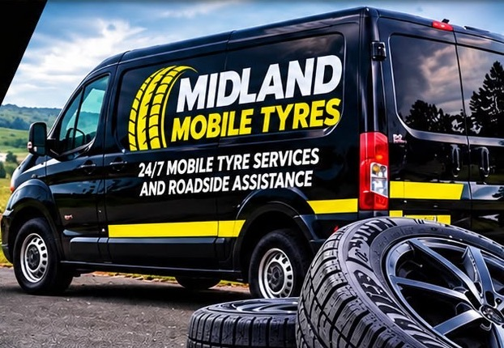
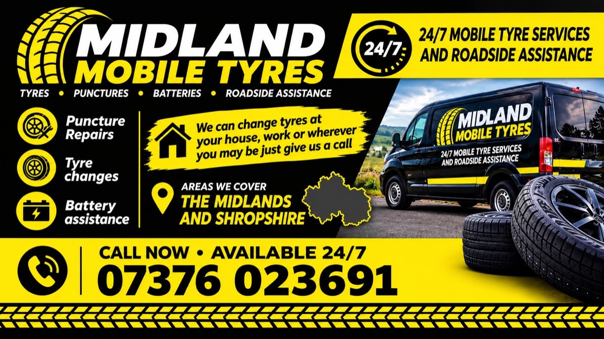

Tyre Changes
New tyres fitted at your home, work or roadside. Tell us your tyre size and we'll bring the right tyre to you.
Flat tyre, puncture or dead battery? We come to you, at home, at work or at the roadside, day or night, and get you back on the road.

We can change tyres at your house, work or wherever you may be. Just give us a call.
Everything is done where your car is. No garage queues, no driving on a damaged tyre.
New tyres fitted at your home, work or roadside. Tell us your tyre size and we'll bring the right tyre to you.
Nails, screws and slow punctures repaired on the spot where it's safe to do so. If it can't be repaired, we'll replace it.
Flat battery? We can get you started and help you sort out a replacement if your battery has had it.
Stuck at the roadside? We come out 24/7 to get you moving again, whatever the time.
Getting help takes one phone call or message.
Tell us where you are, your car, and your tyre size. We'll give you an ETA.
Our fully equipped van comes to your home, workplace or roadside location.
We fit the tyre or fix the problem on the spot, and you're on your way.

Based around Telford, we cover towns and villages across Shropshire and the wider Midlands. Not on the list? Call us and ask, as we probably cover you too.
See what our customers say about Midland Mobile Tyres on Google.
Yes. That's what we do. We change tyres at your house, at work or wherever you've broken down. Just give us a call.
Yes. Midland Mobile Tyres is available 24/7, including evenings, weekends and bank holidays. Call 07376 023691.
The Midlands and Shropshire, including Telford, Shrewsbury, Wellington, Newport, Bridgnorth and Oakengates. If you're not sure we cover you, call us and ask.
Your location, the make and model of your car, and your tyre size. The size is printed on the side of the tyre and looks like 205/55 R16.
Many punctures in the main tread can be repaired safely. Damage to the sidewall or shoulder, or a tyre that's been driven on flat, usually means it needs replacing. We'll check and tell you honestly.
Yes. Message us on WhatsApp at 07376 023691. Sending your location and a photo of the tyre sidewall helps us quote quickly.
Call now • Available 24/7
07376 023691